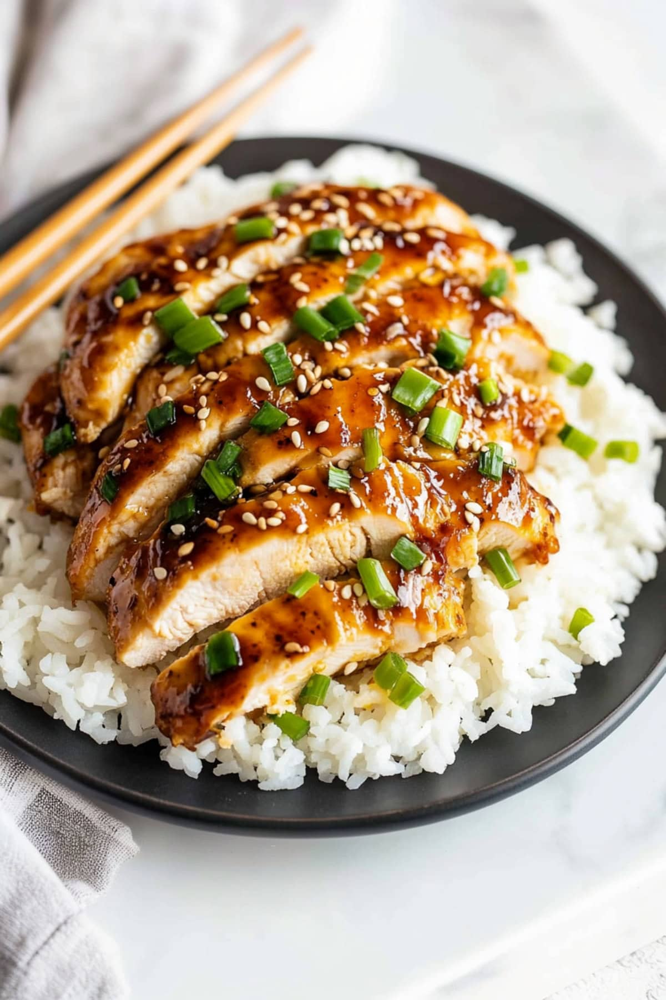

Home
Honey Garlic Chicken

Description:
Honey Garlic Chicken is an epic chicken breast recipe with a magic Honey Garlic Sauce!
This is a terrific back pocket quick dinner idea for busy nights. It’s quite amazing how so
few ingredients can transform into such a tasty sauce for chicken!
Ingredients:
- Boneless, Skinless Chicken Breasts
- Salt, Black Pepper, & Garlic Powder
- All-Purpose Flour or Cornstarch
- Honey
- Soy Sauce
- Rice Vinegar
- Garlic
- Chicken Stock
- Olive Oil
- Butter
- Garnishes - Green onions, sesame seeds and red pepper flakes
Steps:
- Season and dredge. Pat the chicken dry and season both sides with salt, pepper,
and garlic powder. Place the flour or cornstarch in a shallow dish. Then, dredge the
chicken pieces in the coating, shaking off the excess.
- Make the sauce. Whisk the sauce ingredients in a small bowl and set aside.
- Sear. Cook the chicken for 4-5 minutes on each side until golden.
- Simmer. Reduce the heat to medium-low, pour in the sauce, and add the butter. Shake the
skillet gently to coat the chicken and cook for 3-5 minutes until the sauce thickens.
- Finish and serve. Remove the skillet from heat and spoon the sauce over the chicken.
Garnish with desired garnishes and serve with rice, noodles, or veggies. Enjoy!